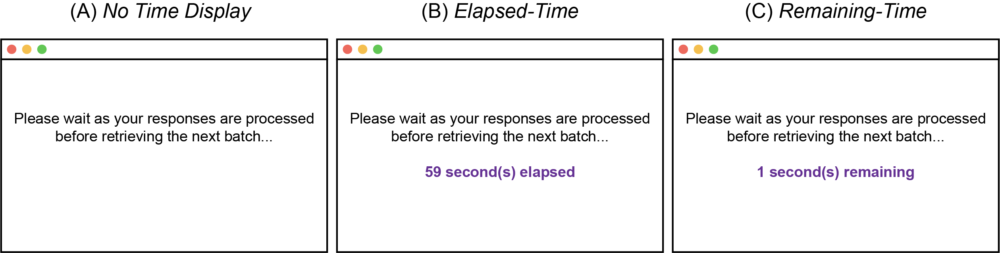
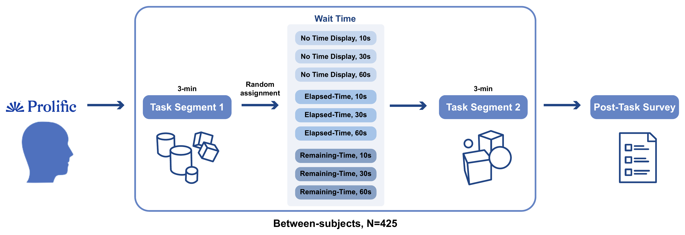

ACM CHI 2026
Counting the Wait: Effects of Temporal Feedback on Downstream Task Performance and Perceived Wait-Time Experience during System-Imposed Delays
1New York University, Tandon School of Engineering
Temporal feedback mode shapes how waiting is perceived: Remaining-Time feedback increased frustration relative to Elapsed-Time feedback, while No Time Display made waits feel longer and heightened ambiguity. These experiential differences did not translate into differences in post-wait task performance.
Why it matters
System-imposed wait times can significantly disrupt digital workflows, affecting user experience and task performance. Prior HCI research has examined how temporal feedback, such as feedback mode (Elapsed-Time vs. Remaining-Time), shapes wait-time perception. However, few studies have investigated how such feedback influences users' downstream task performance, as well as overall affective and cognitive experience.

assets/projects/counting-the-wait/fig3-conditions.pngPaper Fig. 3: the three wait-screen conditions (No Time Display, Elapsed-Time, Remaining-Time).
What the paper did
- Task. A visual reasoning task adapted from CLEVR: counting questions over synthetic 3D scenes, 30 items in two 15-question segments.
- Wait. Between the segments, a system-imposed wait of 10, 30 or 60 seconds with a Remaining-Time, Elapsed-Time or No Time Display, in a 3 × 3 between-subjects design. The numeric display updated once per second.
- Measures. Post-wait performance (Segment 2, controlling for Segment 1), perception of the wait (recall, perceived duration), psychological experience (NASA-TLX workload, emotional state) and a qualitative reflection on how the wait influenced experience.

assets/projects/counting-the-wait/fig2-workflow.pngPaper Fig. 2: overview of the study workflow.
What the paper found
Design considerations
- Reduce uncertainty when predictability is the primary concern. Consider Remaining-Time displays for longer or potentially disruptive pauses. This mode consistently reduced Interpretive Ambiguity, but it also elevated frustration and lowered pleasantness.
- Support emotional comfort through gentler temporal cues. Elapsed-Time displays: participants reported lower frustration and higher pleasantness. A balanced default where affective comfort or sustained engagement matters more than precise predictability.
- Temporal feedback modes shape experience more than performance. None of the modes improved post-wait performance, so designers can select a mode based on experiential priorities (such as comfort, clarity, trust or perceived pace), while attending to each mode's trade-offs.
These are context-sensitive considerations rather than prescriptive rules. The waits were controlled and known in advance, shown as a plain numeric label in a short, repetitive visual reasoning task. The results should therefore not be generalized to arbitrary or unpredictable delays.
Cite
@inproceedings{tan2026counting,
title = {Counting the Wait: Effects of Temporal Feedback on Downstream Task Performance and Perceived Wait-Time Experience during System-Imposed Delays},
author = {Tan, Felicia Fang-Yi and Nov, Oded},
booktitle = {Proceedings of the 2026 CHI Conference on Human Factors in Computing Systems},
series = {CHI '26},
year = {2026},
publisher = {ACM},
doi = {10.1145/3772318.3790475}
}